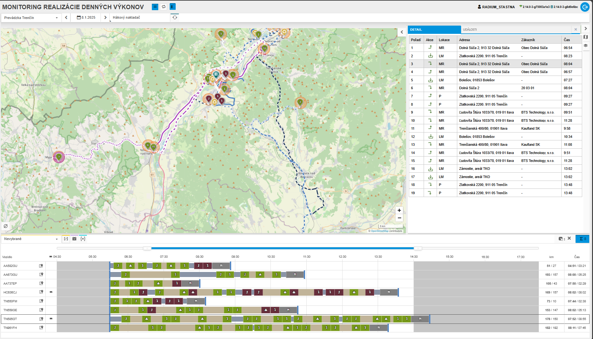
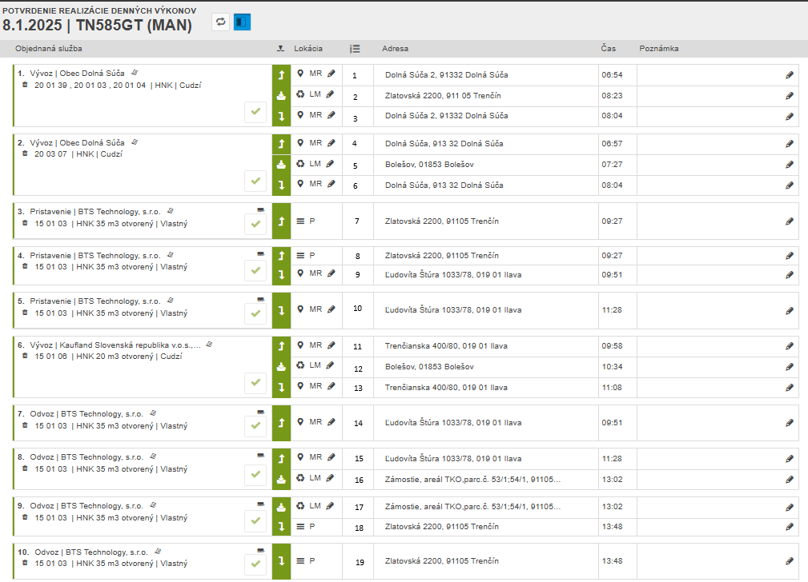

Požadavek
- komplexne poriešiť
- farebnosť, orientácia v rámci mapy/Gaant, dohľadávanie informácií
- v nadväznosti aj na Modul Denné výkony
Aktuální stav
číslování
- v mapě jsou čísla dle pořadí pro označený DV, gantt čísla neobsahuje, v tabulce je pořadí jednotlivých akcí
- potvrzení realizace DV - čísla jsou pouze v mapě
přehlednost v mapě -lokace
- po vybrání akce v ganttu dojde k označení v mapě, ale tím, že se ikony v mapě překrývají a vybraná není dána do popředí, není často správně vidět, o co jde
- pokud je na jednom místě více lokací, je vidět vždy jen jedna (ta poslední), chybí shlukování a možnost výběru jednoho
zobrazení událostí a vstupů PTO
- při výběru se vyberou všechny, není tam patrná vazba na označené OS
chybí možnost
- výběru z mapy (interakce s gantem)
- filtrování neodbavené/odbavené
barvy DV
- při plánování jsou automaticky nastavené barvy dle pořadí, tyto barvy se neukládají, není možné je proto použít pro monitoring DV
- lze použít pouze barevné nastavení pro RP z FLWW (pouze u vybraných objektů), nelze všask zaručit, že obecné barvy, které se teď v monitoringu používají, nebudou pro jednotlivá vozidla nastavena, přehlednost by se tím nezlepšila
Návrh řešení
Rozložení obrazovky

Nové panely
průběh realizace
- přesunutí do bočního panelu (vpravo) + přidat poslední čas (odbavení nebo přeskočení pro danou lokaci)
- v tabulce umožnit řadit dle pořadí, zákazníka a času realizace
- zrušit obarvení dle pořadí realizace (v případě, že není odbaveno v naplánovaném pořadí)
- pro vybrané vozidlo (vždy jen jedno)

detail s událostmi (události a FOB zprávy dle nastavení)
- nový boční panel (v pravo)
- pro vybrané vozidlo (vždy jen jedno)
- umožnit filtr (filtr nad tabulkou a zároveň nad mapou pro vybraný DV), kde budou pouze události pro realizaci
- tzn. pokud máme k dané lokaci více událostí, zobrazí se pouze poslední (ta, která je uvedená díky času na detailu lokace)
- v tabulce bude možné řadit dle času a pořadí lokace

Mapa
- výběr v mapě, gantu nebo tabulce - navzájem propojené
- výběr z mapy - vybere objekt, danou lokaci v ganttu i v tabulce lokací
- při výberu události dojde k výběru objektu, k výběru lokace (gantt i tabulka realizace) dojde pouze v případě, že je na události navázaná lokace
- při výběru lokace/události bude v mapě tato ikona v popředí (dojde k jejímu zvýraznění)
- v případě výběru události, která má na sobě lokaci (nebude-li odfiltrována), budou zvýrazněny obě ikony
kontextová nabídka shluku lokací
- tam, kde je více lokací na jednom místě
- bude zachováno barevné rozlišení obsloužené/neobsloužené lokace

přidat do popisku pořadí lokace
- v mapě i v ganttu

přidat k událostem pořadí lokace (je-li k dispozici)
- v mapě i v ganttu

Rozšíření filtru
- možnost filtrovat lokace obsloužené/neobsloužené

Potvrzení realizace
- přidat pořadí lokací
- 
Akceptační testy
Pro splnění požadavku musí být splněny následující testovací scénáře.
TC01: Xxx
- Systém…
Poznámka